0x01 Json基本语法
定义：
JSON是存储和交换文本信息的语法，类似XML
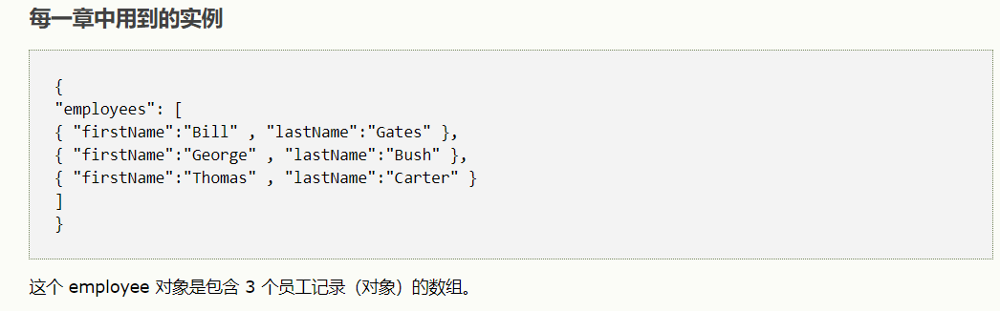
所对应的键值，通过EVAL()转换为JAVASCRIPT的对象，可以通过document.getElementById调用
特性
JSON具有层级结构（值中存在值）
JSON可通过javascript解析
语法规则
数据在名称/值对中
数据由逗号分隔
花括号保存对象
方括号保存数组
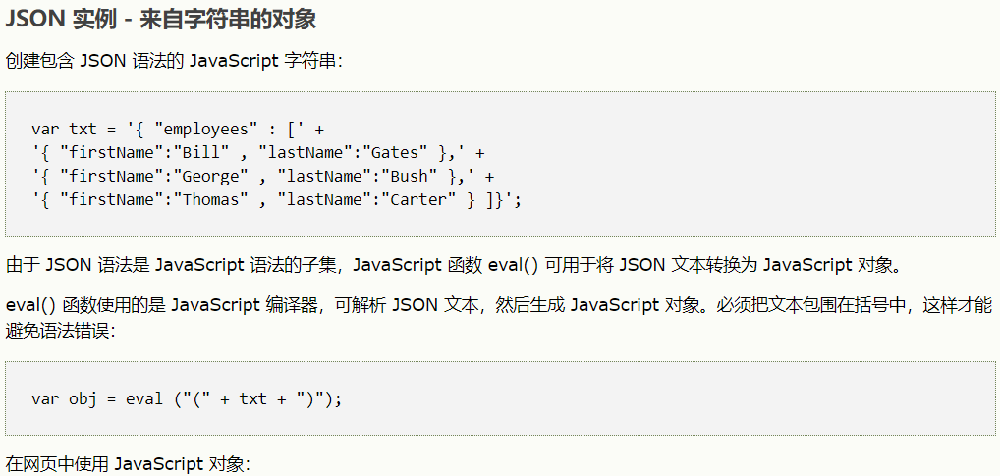
安全性
eval()解析JSON语法存在安全性问题，eval()可解析并执行脚本。建议使用JSON解析器，解析成原生JS对象
0x02 CSP知识点补充
作用
新的 Content-Security-Policy HTTP响应头可以帮助你通过声明，其动态资源允许加载减少对现代浏览器XSS风险
https://lorexxar.cn/2016/08/08/ccsp/
CSP属性
child-src:管理套嵌浏览部分
匹配iframe和frame标签 使得src=”地址”会被CSP拦截connetct-src:限制了可使用的脚本加载的url，也控制websock连接如
<a ping="http://not-example.com">a标签会被阻止<script>1
2
3
4
5
6
7
8
9<script>
var xhr = new XMLHttpRequest();
xhr.open('GET', 'https://not-example.com/');
xhr.send();
var ws = new WebSocket("https://not-example.com/");
var es = new EventSource("https://not-example.com/");
navigator.sendBeacon("https://not-example.com/", { ... });
</script>
websock会被阻止
default-src:作为其他指令的备用，意思是说除了被设置的属性，其他都是按default-src设置
如果设置了Content-Security-Policy: default-src 'self'; script-src https://example.com
就会出现如下代码情况
1 | Content-Security-Policy: child-src 'self'; |
font-src:限制了所以可以被加载的字体资源
如果设置字体属性font-family:"Example Font"会返回错误img-src:限制加载图片的来源
0x03 DVWA_CSP BYPASS
Low
允许加载 以下几个网站加载的js文件。在注释里有创建一个https://pastebin.com/raw/R570EE00JS脚本源
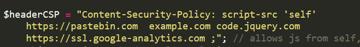
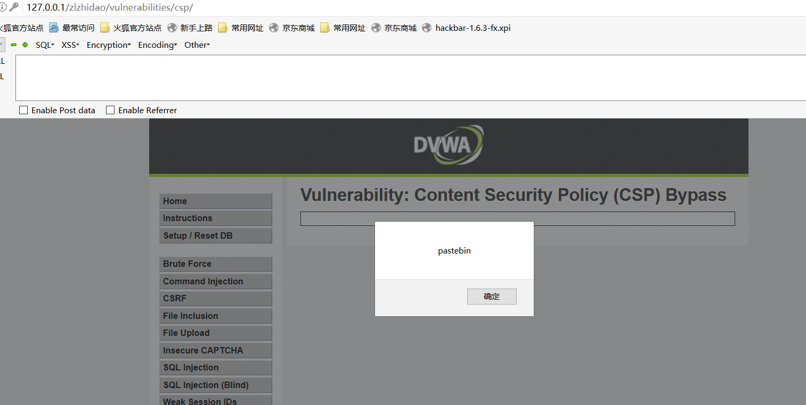
Medium
允许属性名为TmV2ZXIgZ29pbmcgdG8gZ2l2ZSB5b3UgdXA= 加载js脚本
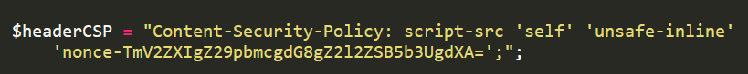
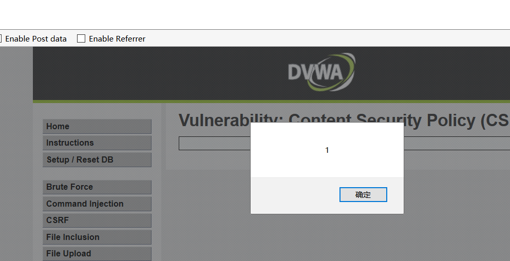
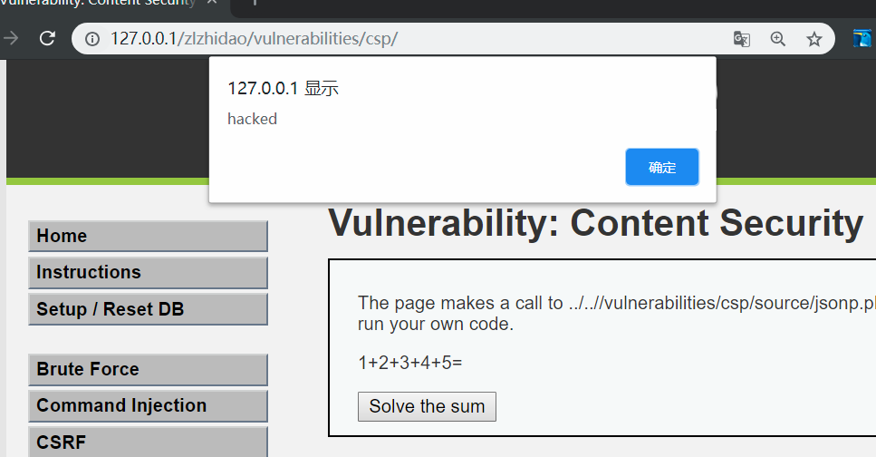
若执行错误脚本会在控制台如下错误信息显示<img src=hacked onerror=alert('hacked')>
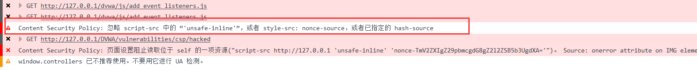
High
代码简析
形成<script src="source/jsonp.php?callback=solveSum"></script>
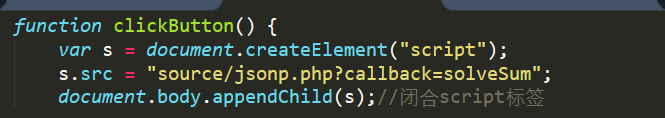
调用并生成json
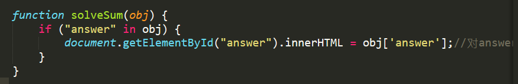
触发按钮执行high.js脚本
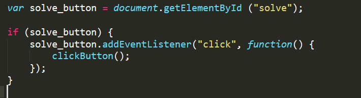
正题
本题一直理解成修改jsonp.php函数，其实是要求我们对js执行代码的修改。
首先分析JS。php脚本执行流程json.php脚本
GET方法接收callback参数."answer"赋值15（形成JSON,这里high.js脚本对够成json形式）- 输出
answer值
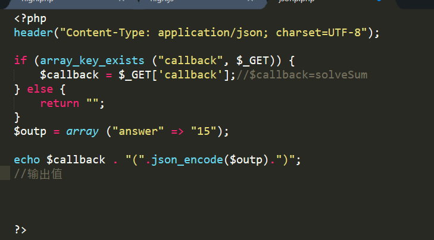
网页事件执行点击
BUTTON触发clickButton()>>执行s.src = "source/jsonp.php?callback=solveSum";>>语句调用jsonp.php>>jsonp.php做的事是GET接收值，创建关于answer数组。(JSON)
$callback . "(".json_encode($outp).")"方法为JS调用JSON对象
目的(方法)
callback参数可控！！！！！！！
这里只要对s.src = "source/jsonp.php?callback=solveSum"修改callback参数为自己想要执行的js代码就可以使得网页正常回显。
1 | script标签中内容会以JS解析，所以callback参数后内容会被执行!!!!! |
<script src="source/jsonp.php?callback=alert('hacked');"></script>
PS:唉我却一直在纠结jsonp.php下的callback参数修改,是行不通的
High.php>>include参数使用解题
那么我们要怎么在不修改代码情况下执行JS脚本，可以看到high.php中有POST['include']借用它就可以了。
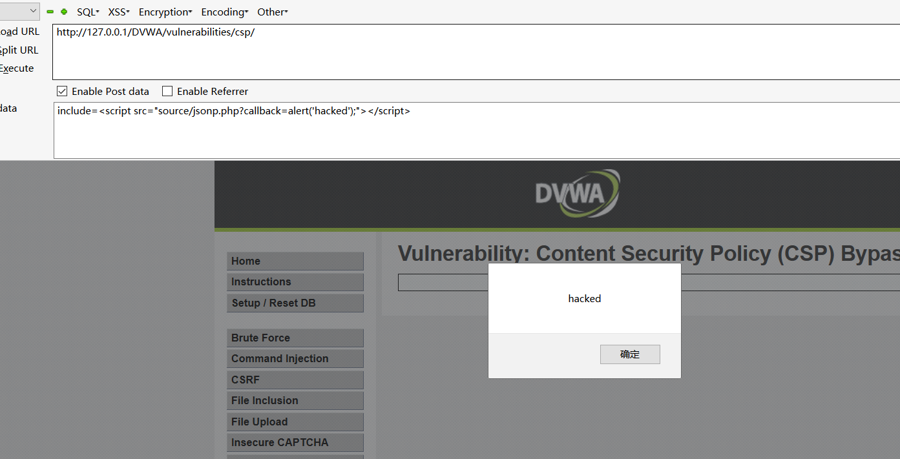
high.php中include使用调用```满足传参要求。
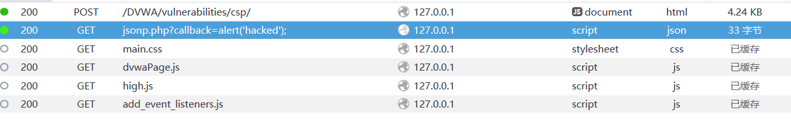
Impossible
删除callback参数可控，代码写死

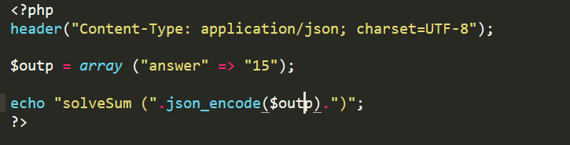
0x04 总结
csp确实可以有效防止XSS注入，但是也必须使用得当。为什么现在csp使用较少，因为它限制了许多JS脚本的灵活使用。
所以CSP安全策略如果使用不当是可以绕过的。!!!!